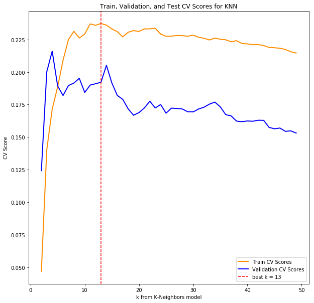
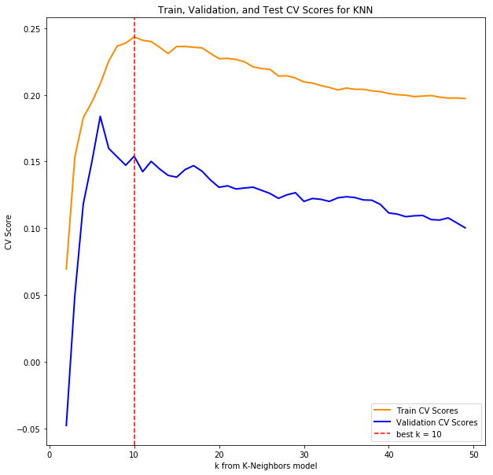
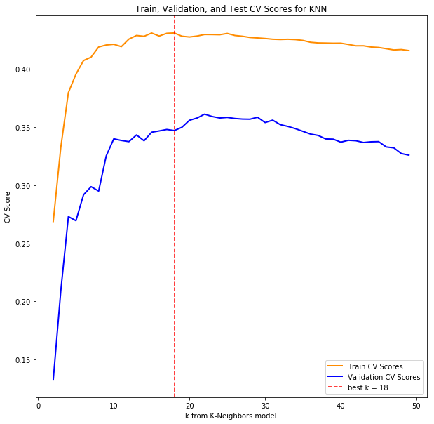
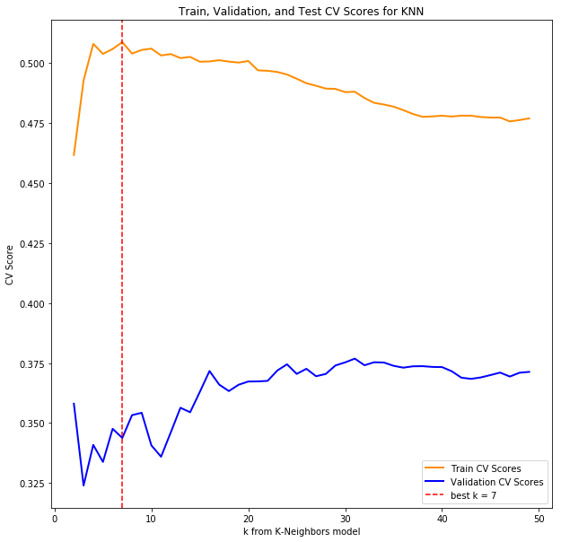
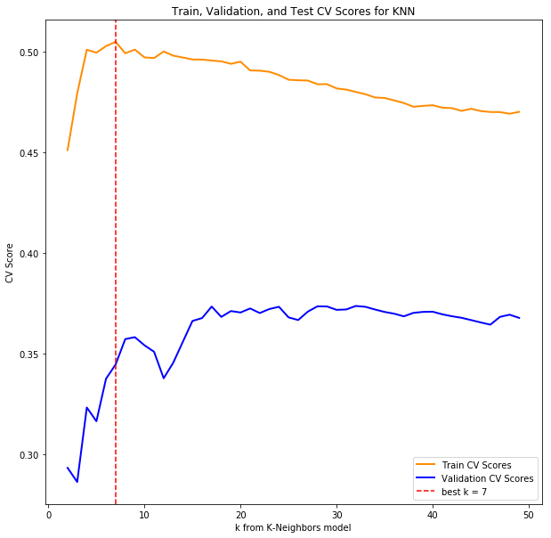
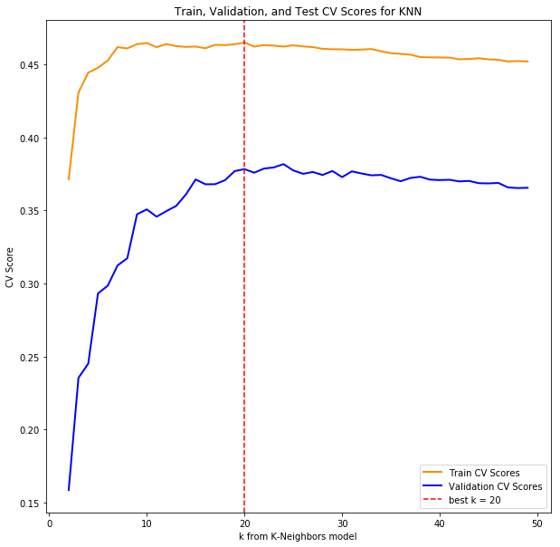
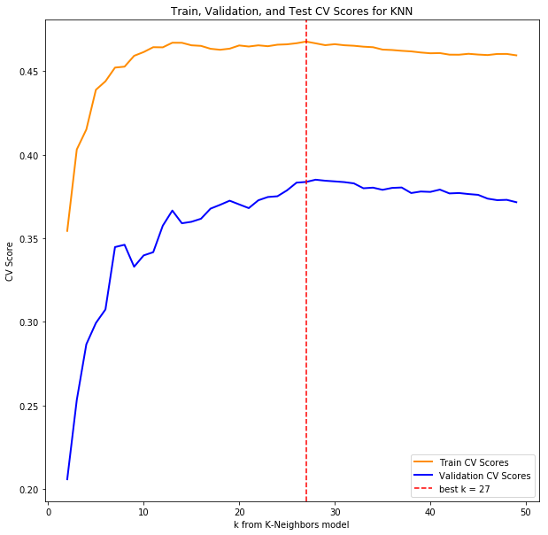

Models
Contents
- 3 Model Construction
- 3.1 Basic Prediction Models
- 3.1.4 Include more comprehensive income levels in each model
- 3.2 Subset Selection
- 3.2.1 OLS Model to determine statistically significant predictors
- 3.2.2 Train models on most significant predictors determined by OLS
- 3.2.3 Stepwise BIC Subset Selection
- 3.2.4 Use columns from forwards and backwards selection in Ridge, Lasso, K-NN Regression
- 3.2.5 Polynomial Features and Interaction Variables
- 3.3 Model Trained with ATF Data
- 3.3.1 Retrieve ATF Data and merge DFs
- 3.3.2 Linear, Ridge, Lasso, and KNN Regressors trained on all columns including ATF
- 3.3.3 OLS Model to determine statistical significance of additional ATF columns
- 3.3.4 Models trained on most significant predictors determined by the OLS Model with ATF Columns
- 3.3.5 Models trained on most significant predictors with polynomial and interaction variables
- 3.3.6 Forwards and Backwards subset selection
- 4 Testing the Final 2 models
3 Model Construction
3.1 Basic Prediction Models
3.1.1 Load Dataframes and cursory cleaning
Our initial approach and trajectory of modeling was: first, create baseline models; second, go through subset selection for stronger performance; third, incorporate another dimension of data from the Bureau of Alcohol, Tobacco, and Firearms (ATF); and, finally, test our selected final model.
census_data_path = 'Crime/data/census/'census_folder_fps = [f for f in listdir(census_data_path) if isfile(join(census_data_path, f))]csv_filepaths = [f for f in listdir('csvs/') if isfile(join('csvs/', f))]census_filepaths = [f for f in census_folder_fps if f[3:] == 'census.csv']def strip_dashes(x):
return ' '.join(' '.join(x.split('-')).split())def merge_df_msa(fbi_df, census_df):
census_mask = census_df['Geography'].isnull()
fbi_mask = fbi_df['Metropolitan_Statistical_Area'].isnull()
df_c = census_df[~census_mask]
df_f = fbi_df[~fbi_mask]
geos = df_c['Geography'].apply(lambda x: x.split('Metro Area')[0].strip())
geos = geos.apply(strip_dashes)
df_c['Geography'] = geos
fbi_geos = df_f['Metropolitan_Statistical_Area'].apply(strip_dashes)
df_f['Metropolitan_Statistical_Area'] = fbi_geos
return pd.merge(df_f, df_c, left_on='Metropolitan_Statistical_Area', right_on='Geography', how='inner').drop('Geography', axis=1)df_dict = dict()
for i in range(0, 11):
df_fbi = pd.read_csv(join('csvs/', csv_filepaths[i]))
df_census = pd.read_csv(join(census_data_path, census_filepaths[i]), skiprows=1).drop(['Id', 'Id2'], axis=1)
columns = [col for col in df_census.columns if 'Native' not in col and 'Margin of Error' not in col]
foreign = [x for x in df_census.columns if 'born outside' in x][0]
non_native = df_census[foreign]
df_census = df_census[columns]
df_census['non_native'] = non_native
df = merge_df_msa(df_fbi, df_census)
# Compute murders per 100,000 people
population = [x for x in df.columns if 'Total population' in x][0]
per_100 = pd.to_numeric(df[population], errors='coerce')/100000.0
df['Murders_per_100000'] = df['Murder_and_nonnegligent_manslaughter']/per_100
df['population'] = df[population]
# Drop any columns that don't have murder counts
df = df.dropna(subset=['Murders_per_100000'])
df_dict[i + 6] = dfframes = []
for k, v in df_dict.items():
# Various labels we decided would be relevant, basic demographic
male = [x for x in v.columns if 'Male' in x][0]
median_age = [x for x in v.columns if 'Median age' in x][0]
median_income = [x for x in v.columns if 'Median income' in x][-1]
black = [x for x in v.columns if 'Black or' in x][0]
white = [x for x in v.columns if 'White' in x][0]
hispanic = [x for x in v.columns if 'Hispanic' in x][0]
poverty = [x for x in v.columns if 'poverty' in x][1]
# Income Labels
income_levels = [x for x in v.columns if 'Population 15 years and over - $' in x]
income_labels = [x.split("- ")[-1] for x in v.columns if 'Population 15 years and over - $' in x]
for i, level in enumerate(income_levels):
v[income_labels[i]] = v[income_levels[i]]
# Education Levels
uneducated = [x for x in v.columns if 'EDUCATIONAL ATTAINMENT' in x][1]
highschool = [x for x in v.columns if 'EDUCATIONAL ATTAINMENT' in x][2]
college = [x for x in v.columns if 'EDUCATIONAL ATTAINMENT' in x][3:5]
v["Year"] = 2000 + k
non_native_series = pd.to_numeric(v['non_native'], errors='coerce').fillna(0)
pop_series = pd.to_numeric(v['Total; Estimate; Total population'], errors='coerce').fillna(1)
cols = ['Murder_and_nonnegligent_manslaughter', 'Murders_per_100000', 'Year', poverty, male,
median_age, median_income, black, white, hispanic, uneducated, highschool] + income_levels
df_temp = v[cols]
column_labels = ['murder_count', 'murder_per_100000', 'year', 'poverty', 'male','median_age',
'median_income', 'black', 'white', 'hispanic', 'uneducated', 'highschool'] + income_labels
# Percentage of population that are young adults, could include or not!
ya_tier = [x for x in v.columns if 'AGE' in x][:8][2]
ya_series = pd.to_numeric(v[ya_tier], errors='coerce').fillna(0)
ya_percentage = ya_series/pop_series
df_temp.columns = column_labels
df_temp['college'] = v[college].sum(axis=1)
df_temp['foreign'] = non_native_series / pop_series
df_temp['population'] = v['population']
frames.append(df_temp)
df_concat = pd.concat(frames)y = df_concat['murder_per_100000']
X = df_concat.drop(['murder_per_100000', 'murder_count'], axis=1)
X = X.apply(pd.to_numeric, errors='coerce')
X_train, X_test, y_train, y_test = train_test_split(X, y, test_size=0.2, random_state=42)3.1.2 Set up training and validation datasets
First, in 3.1.1, we loaded the dataframes from FBI and Census files and split the data into training and testing sets with a fifth of the data being used for the test set. Since we plan to use the test set for the final evaluation of our selected model, we decided to create a separate validation set with which we would compare between the baseline models. We defined a function called ‘train_and_validate’ which trains and validates a linear regression, lasso and ridge regressions with cross validation, and a k-Nearest Neighbor classifier models on selected columns.
X_tr, X_val, y_tr, y_val = train_test_split(X_train, y_train, test_size=0.2, random_state=42)def train_and_validate(X_tr, X_val, y_tr, y_val, cols, title, add_const=True, poly=False, include_knn=True):
X_col_tr = X_tr[cols].apply(pd.to_numeric, errors='coerce').values
X_col_val = X_val[cols].apply(pd.to_numeric, errors='coerce').values
imputer = Imputer(strategy='mean')
# Fill nan values with means
X_col_tr = imputer.fit_transform(X_col_tr)
X_col_val = imputer.fit_transform(X_col_val)
# Scale everything
scaler = MinMaxScaler()
if poly:
poly_generator = PolynomialFeatures(4, include_bias=False)
if add_const:
X_col_tr = poly_generator.fit_transform(scaler.fit_transform(X_col_tr))
X_col_val = poly_generator.fit_transform(scaler.fit_transform(X_col_val))
else:
X_col_tr = sm.add_constant(poly_generator.fit_transform(scaler.fit_transform(X_tr_col)))
X_col_val = sm.add_constant(poly_generator.fit_transform(scaler.fit_transform(X_val_col)))
else:
if add_const:
X_col_tr = sm.add_constant(scaler.fit_transform(X_col_tr))
X_col_val = sm.add_constant(scaler.fit_transform(X_col_val))
else:
X_col_tr = scaler.fit_transform(X_col_tr)
X_col_val = scaler.fit_transform(X_col_val)3.1.3 Linear Ridge, Lasso, KNN regression CV on basic columns (sex, income, etc…)
For our most basic model, we selected the following columns to predict the crime rate in each MSA area: median age, median income, male demographic percentage, percentage of people living under poverty, and population. Since all of our predictor variables are numeric values with certain instances of NaN values, we imputed the missing values with the respective mens and, then, applied a scale to standardize these numeric representations. The three linear models unsurprisingly resulted in low training R-squared values of around 0.10, with validation R-squared values a just little shy of 0.10. However, the k-NN model with k of 13 provided very strong training R-squared value of 0.38 but returned very low validation score of 0.02, hinting at the possibility of overfitting on non-significant independent variables.
# Linear Regression
lr = LinearRegression()
lr.fit(X_col_tr, y_tr)
print('Training R^2 for {} Linear Regression: {}'.format(title, lr.score(X_col_tr, y_tr)))
print('Validation R^2 for {} Linear Regression: {}'.format(title, lr.score(X_col_val, y_val)))
print()
# Lasso Regression
lasso = LassoCV(cv=5)
lasso.fit(X_col_tr, y_tr)
print('Training R^2 for {} Lasso Regression: {}'.format(title, lasso.score(X_col_tr, y_tr)))
print('Validation R^2 for {} Lasso Regression: {}'.format(title, lasso.score(X_col_val, y_val)))
print()
# Ridge Regression
ridge = RidgeCV(cv=5)
ridge.fit(X_col_tr, y_tr)
print('Training R^2 for {} Ridge Regression: {}'.format(title, ridge.score(X_col_tr, y_tr)))
print('Validation R^2 for {} Ridge Regression: {}'.format(title, ridge.score(X_col_val, y_val)))
print()
# KNN, with max_neighbors found through CV
if include_knn:
ks = list(range(2, 50))
scores = []
scores_val = []
max_score = 0
max_k = 0
for k in ks:
knn = KNeighborsRegressor(n_neighbors = k)
score = cross_val_score(knn, X_col_tr, y_tr).mean()
scores.append(score)
scores_val.append(cross_val_score(knn, X_col_val, y_val).mean())
if score > max_score:
max_k = k
max_score = score
knn = KNeighborsRegressor(n_neighbors = max_k)
knn.fit(X_col_tr, y_tr)
print("Training Score for KNN (k={}) Model: {}".format(max_k, knn.score(X_col_tr, y_tr)))
print("Validation Score for KNN (k={}) Model: {}".format(max_k, knn.score(X_col_val, y_val)))
plt.figure(figsize=(10,10))
plt.plot(ks, scores, color='darkorange', lw=2, label='Train CV Scores')
plt.plot(ks, scores_val, color='blue', lw=2, label='Validation CV Scores')
plt.axvline(x=max_k, color='red', label='best k = {}'.format(max_k), linestyle='--')
plt.xlabel('k from K-Neighbors model')
plt.ylabel('CV Score')
plt.title('Train, Validation, and Test CV Scores for KNN')
plt.legend(loc="lower right")
else:
knn=False
return [lr, lasso, ridge, knn]basic_cols = ['median_age', 'median_income', 'male', 'poverty', 'population']
basic_models = train_and_validate(X_tr, X_val, y_tr, y_val, basic_cols, "Basic", add_const=True, poly=False)Training R^2 for Basic Linear Regression: 0.10336462166830496
Validation R^2 for Basic Linear Regression: 0.0905740112706801
Training R^2 for Basic Lasso Regression: 0.10196365776150063
Validation R^2 for Basic Lasso Regression: 0.08412300206289403
Training R^2 for Basic Ridge Regression: 0.1031256353613198
Validation R^2 for Basic Ridge Regression: 0.09070882715172046
Training Score for KNN (k=13) Model: 0.384829110871148
Validation Score for KNN (k=13) Model: 0.02369172929875007

3.1.4 Include more comprehensive income levels in each model
To improve upon our previous model, we decided to incorporate the various breakdown of income composition: ‘$1 to $9,999 or loss’, ‘$10,000 to $14,999’, ‘$15,000 to $24,999’, ‘$25,000 to $34,999’, ‘$35,000 to $49,999’, ‘$50,000 to $64,999’, ‘$65,000 to $74,999’, and ‘$75,000 or more’ variables were included. As expected, the training and validation R-squared values all improved. For all three linear models of simple least squares, Lasso, and Ridge, the training and validation scores hovered at 0.14. The largest performance improvements really showed for the k-NN model for which k of 10 yielded a training score of 0.39 and validation score of 0.13. Albeit the inclusion of income levels did improve our models’ performances, there wasn’t a single model we deemed adequate, and we believe models could be further improved by incorporating all of the selected independent variables.
income_cols = basic_cols + ['$1 to $9,999 or loss', '$10,000 to $14,999', '$15,000 to $24,999',
'$25,000 to $34,999', '$35,000 to $49,999', '$50,000 to $64,999',
'$65,000 to $74,999', '$75,000 or more']
comp_income_models = train_and_validate(X_tr, X_val, y_tr, y_val, income_cols, "Income", add_const=True, poly=False)Training R^2 for Income Linear Regression: 0.14258477634600875
Validation R^2 for Income Linear Regression: 0.1448900418121657
Training R^2 for Income Lasso Regression: 0.1418296759572274
Validation R^2 for Income Lasso Regression: 0.14534604419731512
Training R^2 for Income Ridge Regression: 0.14155031635922333
Validation R^2 for Income Ridge Regression: 0.14566808055357683
Training Score for KNN (k=10) Model: 0.39124066387943257
Validation Score for KNN (k=10) Model: 0.1320391142119982

3.1.5 Include all columns in each model
Before we delve into subset selection of our predictor variables, we ran our models to train on all columns: the aforementioned columns for the basic model; the added income breakdown predictors from above; racial composition of White, Black/African American, and Hispanic/Latino demographic; three education attainment breakdowns of less than high school graduate, high school graduate and equivalence, and some college or higher; foreign born/non-native population percentage of population; and the year variable. As for the reasons for not including other races such as Asian demographic, we mentioned in our EDA that this was intentional to reduce collinearity. Also, to address issues of multicollinearity in education attainment, we decided to sum some college or higher attainment of education into one predictor variable.
As expected, the three linear models all obtained improved training scores of 0.45 and validation scores of 0.41. The k-NN model with k of 18 beat all other models, posting the highest train R-squared of 0.51 and validation R-squared of 0.44. Now, we will look into both filtering the significant variables in linear regression and applying a stepwise predictor selection process for subset selection of the training set.
all_col_models = train_and_validate(X_tr, X_val, y_tr, y_val, X_tr.columns, "All Columns", add_const=True, poly=False)Training R^2 for All Columns Linear Regression: 0.4462319942491597
Validation R^2 for All Columns Linear Regression: 0.4108502357189554
Training R^2 for All Columns Lasso Regression: 0.44560209039581394
Validation R^2 for All Columns Lasso Regression: 0.4102549436785793
Training R^2 for All Columns Ridge Regression: 0.4458059433121516
Validation R^2 for All Columns Ridge Regression: 0.41016795215679747
Training Score for KNN (k=18) Model: 0.5069220726159709
Validation Score for KNN (k=18) Model: 0.44440789682622034

3.2 Subset Selection
3.2.1 OLS Model to determine statistically significant predictors
First, we re-ran the linear regression with all predictor columns using the OLS Model which returned the same train and validation scores as 3.1.5 Model of 0.45 and 0.41, respectively. At alpha of 0.05, the eight statistically significant variables are as follows: the constant/slope, Black/African American demographic, highschool or equivalent attainment, median age, total population, less than high school demographic, and White demographic predictors. You can see the respective coefficients for each predictor in the summary table of the result; but it is, in fact, more informative to see other non-significant predictor variables that could bring more insight: income variables ‘$25,000 to $34,999’, ‘$65,000 to $74,999’, and ‘ $75,000 or more’ variables with p-values of 0.07, 0.07, and 0.12, respective; ‘college’ education variable with p-value of 0.05; ‘median_income’ variable with p-value of 0.11; and ‘year’ variable with p-value of 0.521.
However, after examining that the coefficients of those variables, the income breakdown predictors show that their overall impact on the crime rates aren’t significant and that the granularity of breakdown eliminates their significance with multicollinearity. We do believe that the college, median_income, and year variables are very interesting predictors to consider; in fact, we imagine one of these could be selected in a stepwise predictor selection process in subsequent enhancements. For now, we will proceed to rerun our train_and_validate function by only using the eight significant variables.
X_all_train = X_tr.apply(pd.to_numeric, errors='coerce')
X_all_val = X_val.apply(pd.to_numeric, errors='coerce')
imputer = Imputer(strategy='mean')
X_const_train = imputer.fit_transform(X_all_train)
X_const_val = imputer.fit_transform(X_all_val)
scaler = MinMaxScaler()
X_const_train = sm.add_constant(scaler.fit_transform(X_const_train))
X_const_val = sm.add_constant(scaler.fit_transform(X_const_val))
model = OLS(endog=y_tr, exog=X_const_train)
result = model.fit()
y_hat_train = result.predict()
y_hat_val = result.predict(exog=X_const_val)
print('Train R^2 =', r2_score(y_tr, y_hat_train))
print('Validation R^2 =', r2_score(y_val, y_hat_val))Train R^2 = 0.446231994249
Validation R^2 = 0.410850235719
xlabs = ['const'] + list(X_train.columns)
result.summary(xname=xlabs)| Dep. Variable: | murder_per_100000 | R-squared: | 0.446 |
|---|---|---|---|
| Model: | OLS | Adj. R-squared: | 0.441 |
| Method: | Least Squares | F-statistic: | 79.70 |
| Date: | Wed, 06 Dec 2017 | Prob (F-statistic): | 5.55e-248 |
| Time: | 20:15:43 | Log-Likelihood: | -4719.9 |
| No. Observations: | 2099 | AIC: | 9484. |
| Df Residuals: | 2077 | BIC: | 9608. |
| Df Model: | 21 | ||
| Covariance Type: | nonrobust |
| coef | std err | t | P>|t| | [0.025 | 0.975] | |
|---|---|---|---|---|---|---|
| const | 5.7329 | 1.957 | 2.930 | 0.003 | 1.896 | 9.570 |
| $1 to $9,999 or loss | 0.7105 | 0.793 | 0.896 | 0.370 | -0.845 | 2.266 |
| $10,000 to $14,999 | 0.5470 | 0.596 | 0.917 | 0.359 | -0.622 | 1.716 |
| $15,000 to $24,999 | -0.5599 | 0.906 | -0.618 | 0.537 | -2.337 | 1.217 |
| $25,000 to $34,999 | 1.1013 | 0.616 | 1.787 | 0.074 | -0.108 | 2.310 |
| $35,000 to $49,999 | 0.5251 | 0.673 | 0.780 | 0.435 | -0.794 | 1.845 |
| $50,000 to $64,999 | -0.9803 | 0.726 | -1.350 | 0.177 | -2.404 | 0.444 |
| $65,000 to $74,999 | 1.1605 | 0.642 | 1.809 | 0.071 | -0.098 | 2.419 |
| $75,000 or more | 1.6142 | 1.042 | 1.549 | 0.122 | -0.430 | 3.658 |
| black | 3.7697 | 0.489 | 7.710 | 0.000 | 2.811 | 4.729 |
| college | 1.6800 | 0.868 | 1.936 | 0.053 | -0.022 | 3.382 |
| foreign | -1.7076 | 0.472 | -3.616 | 0.000 | -2.634 | -0.782 |
| highschool | 3.2544 | 0.784 | 4.153 | 0.000 | 1.718 | 4.791 |
| hispanic | 0.8060 | 0.597 | 1.349 | 0.177 | -0.365 | 1.977 |
| male | -0.6007 | 0.672 | -0.893 | 0.372 | -1.919 | 0.718 |
| median_age | 1.7845 | 0.705 | 2.532 | 0.011 | 0.402 | 3.167 |
| median_income | -1.8899 | 1.171 | -1.614 | 0.107 | -4.187 | 0.407 |
| population | 1.7170 | 0.820 | 2.094 | 0.036 | 0.109 | 3.325 |
| poverty | 0.0808 | 0.700 | 0.115 | 0.908 | -1.293 | 1.454 |
| uneducated | 3.2330 | 0.912 | 3.544 | 0.000 | 1.444 | 5.022 |
| white | -8.7646 | 0.625 | -14.016 | 0.000 | -9.991 | -7.538 |
| year | -0.1063 | 0.166 | -0.641 | 0.521 | -0.431 | 0.219 |
| Omnibus: | 521.600 | Durbin-Watson: | 2.058 |
|---|---|---|---|
| Prob(Omnibus): | 0.000 | Jarque-Bera (JB): | 2342.335 |
| Skew: | 1.121 | Prob(JB): | 0.00 |
| Kurtosis: | 7.665 | Cond. No. | 102. |
most_significant = np.array(xlabs)[np.array(result.pvalues < 0.05)][1:]3.2.2 Train models on most significant predictors determined by OLS
Selecting the statistically significant variables from the least squares linear regression in 3.5.1 at alpha of 0.05, we obtain the same performance results, again, for the three linear regression models as we did above. However, the most surprising improvements came from the k-NN model with best cross-validated k of 7 that had training R-squared value of 0.66 and validation score of 0.50. The k-NN, again, beats its own record solely using seven predictor variables and a constant.
OLS_sig_col_models = train_and_validate(X_tr, X_val, y_tr, y_val, most_significant, "Most Significant OLS Predictors", add_const=True, poly=False)Training R^2 for Most Significant OLS Predictors Linear Regression: 0.4403589258248584
Validation R^2 for Most Significant OLS Predictors Linear Regression: 0.40655554960022205
Training R^2 for Most Significant OLS Predictors Lasso Regression: 0.4403526474899125
Validation R^2 for Most Significant OLS Predictors Lasso Regression: 0.40658558175226805
Training R^2 for Most Significant OLS Predictors Ridge Regression: 0.4402215161510081
Validation R^2 for Most Significant OLS Predictors Ridge Regression: 0.406473259967734
Training Score for KNN (k=7) Model: 0.6573569971226408
Validation Score for KNN (k=7) Model: 0.4990922977081862

3.2.3 Stepwise BIC Subset Selection
We utilized both forwards and backwards stepwise selection processes based on the BIC scores of linear regressions. Both the forwards and backwards stepwise selection processes returned the identical predictors: ‘uneducated’ and ‘highschool’ education variables; ‘black’, ‘white’, and ‘foreign’ demographic variables; and ‘’median_age’ variable.
def step_forwards_backwards(df, y_vars, direction='forward'):
assert direction in ['forward', 'backward']
y = y_vars.reshape(-1,1)
predictors = set(df.columns)
selected_predictors = set() if direction=='forward' else set(predictors)
n = df.shape[0]
best_bic = np.inf
best_bics = []
best_models = []
imputer = Imputer(strategy='mean')
if direction == 'forward':
X = np.ones(n).reshape(-1,1)
X = np.concatenate([X, df[list(selected_predictors)].values], axis=1)
while (True):
possible_bic_scores = []
possible_predictors = list(selected_predictors ^ predictors)
if len(possible_predictors) == 0:
break
for predictor in possible_predictors:
x_temp = np.concatenate([X, df[predictor].values.reshape(-1,1)], axis=1)
x_temp = imputer.fit_transform(x_temp)
model = OLS(endog=y, exog=x_temp).fit()
bic = model.bic
possible_bic_scores.append(bic)
best_predictor_ix = np.argmin(possible_bic_scores)
best_predictor = possible_predictors[best_predictor_ix]
best_bic = np.min(possible_bic_scores)
best_bics.append(best_bic)
selected_predictors.add(best_predictor)
X = np.concatenate([X, df[best_predictor].values.reshape(-1,1)], axis=1)
best_models.append(list(selected_predictors))
else:
while (True):
possible_bic_scores = []
possible_predictors = list(selected_predictors)
if len(possible_predictors) == 0:
break
for predictor in possible_predictors:
X = np.concatenate([np.ones(n).reshape(-1,1), df[list(selected_predictors - set([predictor]))].values], axis=1)
X = imputer.fit_transform(X)
model = OLS(endog=y, exog=X).fit()
bic = model.bic
possible_bic_scores.append(bic)
best_predictor_ix = np.argmin(possible_bic_scores)
best_predictor = possible_predictors[best_predictor_ix]
best_bic = possible_bic_scores[best_predictor_ix]
selected_predictors.discard(best_predictor)
best_bics.append(best_bic)
best_models.append(list(selected_predictors))
index_of_best_bic = np.argmin(best_bics)
return best_models[index_of_best_bic]predictors_forward = step_forwards_backwards(X_all_train, y_tr, direction='forward')
predictors_forward['highschool', 'black', 'median_age', 'foreign', 'uneducated', 'white']
predictors_backward = step_forwards_backwards(X_all_train, y_tr, direction='backward')
predictors_backward['median_age', 'white', 'highschool', 'black', 'foreign', 'uneducated']
3.2.4 Use columns from forwards and backwards selection in Ridge, Lasso, K-NN Regression
The result from training a new model based on the stepwise selected columns resulted in similar results as the model in 3.2.2. This is not too surprising as many of these same predictor variables were selected under statistically significant method above. At the moment, our next method is to incorporate interaction variables in polynomial regression using PolynomialFeatures.
fwd_models = train_and_validate(X_tr, X_val, y_tr, y_val, predictors_forward, "Forward BIC Selection", add_const=True, poly=False)Training R^2 for Forward BIC Selection Linear Regression: 0.4395767505680862
Validation R^2 for Forward BIC Selection Linear Regression: 0.4058955039695988
Training R^2 for Forward BIC Selection Lasso Regression: 0.4395728491071222
Validation R^2 for Forward BIC Selection Lasso Regression: 0.40591249707502186
Training R^2 for Forward BIC Selection Ridge Regression: 0.4394289184448102
Validation R^2 for Forward BIC Selection Ridge Regression: 0.40572943969483877
Training Score for KNN (k=7) Model: 0.6556020765509312
Validation Score for KNN (k=7) Model: 0.49629440076890985

back_models = train_and_validate(X_tr, X_val, y_tr, y_val, predictors_backward, "Backward BIC Selection", add_const=True, poly=False)Training R^2 for Backward BIC Selection Linear Regression: 0.4395767505680862
Validation R^2 for Backward BIC Selection Linear Regression: 0.4058955039695988
Training R^2 for Backward BIC Selection Lasso Regression: 0.4395729554888817
Validation R^2 for Backward BIC Selection Lasso Regression: 0.4059089097399196
Training R^2 for Backward BIC Selection Ridge Regression: 0.4394289184448102
Validation R^2 for Backward BIC Selection Ridge Regression: 0.40572943969483877
Training Score for KNN (k=7) Model: 0.6556020765509312
Validation Score for KNN (k=7) Model: 0.49629440076890985

union = list(set(predictors_forward).union(set(predictors_backward)))
union_models = train_and_validate(X_tr, X_val, y_tr, y_val, union, "Union of BIC Selected Columns", add_const=True, poly=False)Training R^2 for Union of BIC Selected Columns Linear Regression: 0.4395767505680862
Validation R^2 for Union of BIC Selected Columns Linear Regression: 0.4058955039695988
Training R^2 for Union of BIC Selected Columns Lasso Regression: 0.4395728491071222
Validation R^2 for Union of BIC Selected Columns Lasso Regression: 0.40591249707502186
Training R^2 for Union of BIC Selected Columns Ridge Regression: 0.4394289184448102
Validation R^2 for Union of BIC Selected Columns Ridge Regression: 0.40572943969483877
Training Score for KNN (k=7) Model: 0.6556020765509312
Validation Score for KNN (k=7) Model: 0.49629440076890985

intersection = list(set(predictors_forward).intersection(set(predictors_backward)))
inter_models = train_and_validate(X_tr, X_val, y_tr, y_val, intersection, "Intersection of BIC Selected Columns", add_const=True, poly=False)Training R^2 for Intersection of BIC Selected Columns Linear Regression: 0.4395767505680862
Validation R^2 for Intersection of BIC Selected Columns Linear Regression: 0.4058955039695988
Training R^2 for Intersection of BIC Selected Columns Lasso Regression: 0.4395728491071222
Validation R^2 for Intersection of BIC Selected Columns Lasso Regression: 0.40591249707502186
Training R^2 for Intersection of BIC Selected Columns Ridge Regression: 0.4394289184448102
Validation R^2 for Intersection of BIC Selected Columns Ridge Regression: 0.40572943969483877
Training Score for KNN (k=7) Model: 0.6556020765509312
Validation Score for KNN (k=7) Model: 0.49629440076890985
3.2.5 Polynomial Features and Interaction Variables
We transformed the numeric variables into fourth degree polynomial with interaction for the selected columns in our subselection methodology in 3.2.4 to run a multinomial regression model. Since we are creating many predictor columns, we ran into problems of overfitting with the k-NN model, obtaining very extremely high training scores and negative validation scores. Therefore, we only ran the three regression methods of polynomial, Lasso with cross-validation, and Ridge with cross-validation models. The results were surprising. First, the polynomial variables on linear regression method returned signs of overfitting with high train score of 0.59 and negative validation score of -2.67. Second, the Lasso and Ridge models returned slightly improved train/validation scores of 0.49/0.43 and 0.50/0.42, respectively. Still, the k-NN model from 3.6 outperforms all of its competition. The best trajectory to enhance our model might be to add a new dimension of data.
union = list(set(predictors_forward).union(set(predictors_backward)))
union_poly_models = train_and_validate(X_tr, X_val, y_tr, y_val, union,
"Union of BIC Selected Columns with Polynomial Variables",
add_const=True, poly=True, include_knn=False)Training R^2 for Union of BIC Selected Columns with Polynomial Variables Linear Regression: 0.5925936931515721
Validation R^2 for Union of BIC Selected Columns with Polynomial Variables Linear Regression: -2.67272217648836
Training R^2 for Union of BIC Selected Columns with Polynomial Variables Lasso Regression: 0.48592701270872163
Validation R^2 for Union of BIC Selected Columns with Polynomial Variables Lasso Regression: 0.42508113020444754
Training R^2 for Union of BIC Selected Columns with Polynomial Variables Ridge Regression: 0.49781968947957717
Validation R^2 for Union of BIC Selected Columns with Polynomial Variables Ridge Regression: 0.42074141255544384
intersection = list(set(predictors_forward).intersection(set(predictors_backward)))
inter_poly_models = train_and_validate(X_tr, X_val, y_tr, y_val, intersection,
"Intersection of BIC Selected Columns with Polynomial Variables",
add_const=True, poly=True, include_knn=False)Training R^2 for Intersection of BIC Selected Columns with Polynomial Variables Linear Regression: 0.5925936931515721
Validation R^2 for Intersection of BIC Selected Columns with Polynomial Variables Linear Regression: -2.67272217648836
Training R^2 for Intersection of BIC Selected Columns with Polynomial Variables Lasso Regression: 0.48592701270872163
Validation R^2 for Intersection of BIC Selected Columns with Polynomial Variables Lasso Regression: 0.42508113020444754
Training R^2 for Intersection of BIC Selected Columns with Polynomial Variables Ridge Regression: 0.49781968947957717
Validation R^2 for Intersection of BIC Selected Columns with Polynomial Variables Ridge Regression: 0.42074141255544384
3.3 Model Trained with ATF Data
3.3.1 Retrieve ATF Data and merge DFs
As we mentioned in our related work review in 2.3, we wanted to incorporate firearms data into our predictor variables. By merging new ATF dataframes with existing dataframes composed of both FBI and Census data, we were able to bring in a proxy for gun ownership by having state-level data on illegal firearms that were sourced and recovered. Although we could not find any MSA-level data regarding gun ownership, we wanted to see how our models would perform with the two added variables: ‘firearms_soruced’ and ‘firearms_recovered’.
def get_atf_vals(states, atf_df, recover=True):
if len(states) > 1:
state_counts = []
for state in states:
if recover:
count = atf_df[atf_df["State"] == state]['Total Recovered'].values
else:
count = atf_df[atf_df["State"] == state]['Total Sourced'].values
if len(count) > 0:
state_counts.append(count[0])
return np.mean(state_counts)
else:
if recover:
return atf_df[atf_df["State"] == states[0]]['Total Recovered'].values[0]
else:
return atf_df[atf_df["State"] == states[0]]['Total Sourced'].values[0]atf_filepaths = [f for f in listdir('atf_csvs') if isfile(join('atf_csvs', f))]atf_dict = dict()
for file in atf_filepaths:
df = pd.read_csv(join('atf_csvs', file))
atf_dict[file[:4]] = dfdf_dict = dict()
for i in range(0, 11):
df_fbi = pd.read_csv(join('csvs/', csv_filepaths[i]))
df_census = pd.read_csv(join(census_data_path, census_filepaths[i]), skiprows=1).drop(['Id', 'Id2'], axis=1)
columns = [col for col in df_census.columns if 'Native' not in col and 'Margin of Error' not in col]
foreign = [x for x in df_census.columns if 'born outside' in x][0]
non_native = df_census[foreign]
df_census = df_census[columns]
df_census['non_native'] = non_native
df = merge_df_msa(df_fbi, df_census)
# Compute murders per 100,000 people
population = [x for x in df.columns if 'Total population' in x][0]
per_100 = pd.to_numeric(df[population], errors='coerce')/100000.0
df['Murders_per_100000'] = df['Murder_and_nonnegligent_manslaughter']/per_100
df['population'] = df[population]
# Compute number of firearms recovered and sourced in each MSA state
if str(i + 2006) in atf_dict.keys():
atf_df = atf_dict[str(i + 2006)]
msa = df['Metropolitan_Statistical_Area'].apply(lambda x: x.split(',')[1:][0].split())
df['firearms_recovered'] = msa.apply(get_atf_vals, atf_df=atf_df, recover=True)
df['firearms_sourced'] = msa.apply(get_atf_vals, atf_df=atf_df, recover=False)
else:
df['firearms_recovered'] = np.zeros(df.shape[0])
df['firearms_sourced'] = np.zeros(df.shape[0])
# Drop any columns that don't have murder counts
df = df.dropna(subset=['Murders_per_100000'])
df_dict[i + 6] = dfframes = []
for k, v in df_dict.items():
male = [x for x in v.columns if 'Male' in x][0]
median_age = [x for x in v.columns if 'Median age' in x][0]
median_income = [x for x in v.columns if 'Median income' in x][-1]
black = [x for x in v.columns if 'Black or' in x][0]
white = [x for x in v.columns if 'White' in x][0]
hispanic = [x for x in v.columns if 'Hispanic' in x][0]
poverty = [x for x in v.columns if 'poverty' in x][1]
income_levels = [x for x in v.columns if 'Population 15 years and over - $' in x]
income_labels = [x.split("- ")[-1] for x in v.columns if 'Population 15 years and over - $' in x]
for i in range(0, len(income_levels)):
v[income_labels[i]] = v[income_levels[i]]
uneducated = [x for x in v.columns if 'EDUCATIONAL ATTAINMENT' in x][1]
highschool = [x for x in v.columns if 'EDUCATIONAL ATTAINMENT' in x][2]
college = [x for x in v.columns if 'EDUCATIONAL ATTAINMENT' in x][3:5]
v["Year"] = 2000 + k
non_native_series = pd.to_numeric(v['non_native'], errors='coerce').fillna(0)
pop_series = pd.to_numeric(v['Total; Estimate; Total population'], errors='coerce').fillna(1)
cols = ['Murder_and_nonnegligent_manslaughter', 'Murders_per_100000', 'Year', poverty, male,
median_age, median_income, black, white, hispanic, uneducated, highschool] + income_levels
df_temp = v[cols]
column_labels = ['murder_count', 'murder_per_100000', 'year', 'poverty', 'male','median_age',
'median_income', 'black', 'white', 'hispanic', 'uneducated', 'highschool'] + income_labels
df_temp.columns = column_labels
df_temp['college'] = v[college].sum(axis=1)
df_temp['foreign'] = non_native_series / pop_series
df_temp['population'] = v['population']
df_temp[['firearms_sourced', 'firearms_recovered']] = v[['firearms_sourced', 'firearms_recovered']]
frames.append(df_temp)
df_concat = pd.concat(frames)3.3.2 Linear, Ridge, Lasso, and KNN Regressors trained on all columns including ATF
Similar to the methodology in 3.1.5 were we include all columns, we train and validate the four models in the defined function with the two added predictor variables, but the results were unfortunately the same as those of the 3.1.5 models. Again, all three linear models returned the same performance scores of training R-squared of 0.45 and validation R-squared of 0.41, and the k-NN had scores of 0.51 and 0.44 for train and validation. Nonetheless, we were still believe applying the subselection methods from 3.2 with the added predictors would bring more insights and potentially enhancements.
atf_all_model = train_and_validate(X_tr, X_val, y_tr, y_val, X.columns,
"All Columns Including ATF", add_const=True, poly=False)Training R^2 for All Columns Including ATF Linear Regression: 0.4462319942491597
Validation R^2 for All Columns Including ATF Linear Regression: 0.4108502357189554
Training R^2 for All Columns Including ATF Lasso Regression: 0.44560209039581394
Validation R^2 for All Columns Including ATF Lasso Regression: 0.4102549436785793
Training R^2 for All Columns Including ATF Ridge Regression: 0.4458059433121516
Validation R^2 for All Columns Including ATF Ridge Regression: 0.41016795215679747
Training Score for KNN (k=18) Model: 0.5069220726159709
Validation Score for KNN (k=18) Model: 0.44440789682622034
3.3.3 OLS Model to determine statistical significance of additional ATF columns
y_atf = df_concat['murder_per_100000']
X_atf = df_concat.drop(['murder_per_100000', 'murder_count'], axis=1)
X_atf = X_atf.apply(pd.to_numeric, errors='coerce')
X_atf_train, X_atf_test, y_atf_train, y_atf_test = train_test_split(X_atf, y_atf, test_size=0.2, random_state=42)X_tr, X_val, y_tr, y_val = train_test_split(X_atf_train, y_atf_train, test_size=0.2, random_state=42)imputer = Imputer(strategy='mean')
X_all_train = imputer.fit_transform(X_tr)
X_all_val = imputer.fit_transform(X_val)
scaler = MinMaxScaler()
X_const_train = sm.add_constant(scaler.fit_transform(X_all_train))
X_const_val = sm.add_constant(scaler.fit_transform(X_all_val))
model = OLS(endog=y_tr, exog=X_const_train)
result = model.fit()
y_hat_train = result.predict()
y_hat_val = result.predict(exog=X_const_val)
print('Train R^2 =', r2_score(y_tr, y_hat_train))
print('Validation R^2 =', r2_score(y_val, y_hat_val))Train R^2 = 0.447551488088
Validation R^2 = 0.409375635927
xlabs = ['const'] + list(X_tr.columns)
result.summary(xname=xlabs)| Dep. Variable: | murder_per_100000 | R-squared: | 0.448 |
|---|---|---|---|
| Model: | OLS | Adj. R-squared: | 0.441 |
| Method: | Least Squares | F-statistic: | 73.09 |
| Date: | Wed, 06 Dec 2017 | Prob (F-statistic): | 3.84e-247 |
| Time: | 20:16:04 | Log-Likelihood: | -4717.4 |
| No. Observations: | 2099 | AIC: | 9483. |
| Df Residuals: | 2075 | BIC: | 9618. |
| Df Model: | 23 | ||
| Covariance Type: | nonrobust |
| coef | std err | t | P>|t| | [0.025 | 0.975] | |
|---|---|---|---|---|---|---|
| const | 6.0180 | 1.962 | 3.068 | 0.002 | 2.171 | 9.865 |
| $1 to $9,999 or loss | 0.6171 | 0.794 | 0.778 | 0.437 | -0.939 | 2.174 |
| $10,000 to $14,999 | 0.5167 | 0.596 | 0.867 | 0.386 | -0.652 | 1.686 |
| $15,000 to $24,999 | -0.5391 | 0.906 | -0.595 | 0.552 | -2.316 | 1.238 |
| $25,000 to $34,999 | 1.1126 | 0.616 | 1.806 | 0.071 | -0.096 | 2.321 |
| $35,000 to $49,999 | 0.5484 | 0.673 | 0.815 | 0.415 | -0.771 | 1.868 |
| $50,000 to $64,999 | -1.0270 | 0.726 | -1.415 | 0.157 | -2.451 | 0.397 |
| $65,000 to $74,999 | 1.1053 | 0.642 | 1.722 | 0.085 | -0.154 | 2.364 |
| $75,000 or more | 1.7419 | 1.044 | 1.669 | 0.095 | -0.305 | 3.788 |
| black | 3.7867 | 0.491 | 7.715 | 0.000 | 2.824 | 4.749 |
| college | 1.6117 | 0.868 | 1.856 | 0.064 | -0.091 | 3.315 |
| firearms_recovered | 2.3063 | 1.162 | 1.984 | 0.047 | 0.027 | 4.586 |
| firearms_sourced | -2.1071 | 0.963 | -2.188 | 0.029 | -3.995 | -0.219 |
| foreign | -1.6875 | 0.472 | -3.575 | 0.000 | -2.613 | -0.762 |
| highschool | 3.2509 | 0.783 | 4.150 | 0.000 | 1.715 | 4.787 |
| hispanic | 0.8688 | 0.598 | 1.453 | 0.146 | -0.304 | 2.042 |
| male | -0.6359 | 0.672 | -0.946 | 0.344 | -1.954 | 0.683 |
| median_age | 1.7402 | 0.707 | 2.460 | 0.014 | 0.353 | 3.127 |
| median_income | -2.1822 | 1.188 | -1.837 | 0.066 | -4.512 | 0.148 |
| population | 1.7017 | 0.820 | 2.076 | 0.038 | 0.094 | 3.309 |
| poverty | -0.0787 | 0.708 | -0.111 | 0.911 | -1.467 | 1.309 |
| uneducated | 3.2177 | 0.917 | 3.508 | 0.000 | 1.419 | 5.016 |
| white | -8.8336 | 0.633 | -13.955 | 0.000 | -10.075 | -7.592 |
| year | 0.0035 | 0.207 | 0.017 | 0.987 | -0.403 | 0.410 |
| Omnibus: | 514.015 | Durbin-Watson: | 2.055 |
|---|---|---|---|
| Prob(Omnibus): | 0.000 | Jarque-Bera (JB): | 2296.064 |
| Skew: | 1.105 | Prob(JB): | 0.00 |
| Kurtosis: | 7.623 | Cond. No. | 103. |

3.3.4 Models trained on most significant predictors determined by the OLS Model with ATF Columns
Just as we run an OLS model in 3.2.1 to determine statistically significant predictors on all columns, both of the added ATF columns were, in fact, selected as two of the nine statistically significant variables: alongside the constant/slope, Black/African American demographic, highschool or equivalent attainment, median age, total population, less than high school demographic, and White demographic predictors. The fact that both of the new columns had p-values less than the alpha of 0.05 speaks volume to the high correlative relationship between firearms and crime that was previously not being considered.
Running the same train and validation modeling methodology, we obtained similar performance results as from the models above in 3.3.2. The three linear regressions had train and validation scores of 0.44 and 0.41, respectively; and the k-NN model with best k of 20 had marginal improvements in its performance scores with train R-squared of 0.53 and validation R-squared of 0.45. Still, the k-NN model in 3.2.2 where we trained models on most significant predictors determined by OLS without the ATF columns have the best performance scores.
most_significant_atf = np.array(xlabs)[np.array(result.pvalues < 0.05)][1:]
most_significant_atfarray(['black', 'firearms_recovered', 'firearms_sourced', 'foreign',
'highschool', 'median_age', 'population', 'uneducated', 'white'],
dtype='<U20')
atf_most_significant = train_and_validate(X_tr, X_val, y_tr, y_val, most_significant_atf,
"Most Significant Columns as Determined by OLS Including ATF",
add_const=True, poly=False)Training R^2 for Most Significant Columns as Determined by OLS Including ATF Linear Regression: 0.4416844727031795
Validation R^2 for Most Significant Columns as Determined by OLS Including ATF Linear Regression: 0.4055867039068164
Training R^2 for Most Significant Columns as Determined by OLS Including ATF Lasso Regression: 0.4416569916105543
Validation R^2 for Most Significant Columns as Determined by OLS Including ATF Lasso Regression: 0.405664008332985
Training R^2 for Most Significant Columns as Determined by OLS Including ATF Ridge Regression: 0.44144209747384194
Validation R^2 for Most Significant Columns as Determined by OLS Including ATF Ridge Regression: 0.4057770445145181
Training Score for KNN (k=20) Model: 0.5339733103141981
Validation Score for KNN (k=20) Model: 0.44500450313796264

3.3.5 Models trained on most significant predictors with polynomial and interaction variables
Now, we used PolynomialFeatures to create fourth degree polynomial predictors for the aforementioned statistically significant columns in 3.3.3 along with interaction variables between them. Then, we used this to train and validate our four models. Similar to 3.3.3, the multinomial regression overfits with negative validation score, the Lasso and Ridge regressions both improve with higher train/validation scores of 0.50/0.45 and 0.53/0.44, and finally the k-NN regression with best k of 27, surprisingly, does not overfit and returns slightly improved train and validation scores of 0.52 and 0.46.
Although the k-NN model did not improve with the addition of the ATF data, we were able to obtain comparable performance score with our Lasso regression. Compared to the highest train and validation R-squared values of 0.45 and 0.41 without ATF columns in 3.2, the new Lasso regression with the two ATF columns does have around 0.05 increase for the scores.
atf_most_sig_poly_model = train_and_validate(X_tr, X_val, y_tr, y_val, most_significant_atf,
"All Columns Including ATF with Polynomial Predictors", add_const=True, poly=True)Training R^2 for All Columns Including ATF with Polynomial Predictors Linear Regression: 0.7320519103314165
Validation R^2 for All Columns Including ATF with Polynomial Predictors Linear Regression: -304.9367042667425
Training R^2 for All Columns Including ATF with Polynomial Predictors Lasso Regression: 0.49935261726706975
Validation R^2 for All Columns Including ATF with Polynomial Predictors Lasso Regression: 0.450994478817581
Training R^2 for All Columns Including ATF with Polynomial Predictors Ridge Regression: 0.5336746781783491
Validation R^2 for All Columns Including ATF with Polynomial Predictors Ridge Regression: 0.44413048096274194
Training Score for KNN (k=27) Model: 0.5172479091867096
Validation Score for KNN (k=27) Model: 0.4618831040144915

3.3.6 Forwards and Backwards subset selection
When we ran forwards and backwards selection methods with the two new columns, both direction fails to select either of the ATF columns. In fact, the selection methods choose the same columns as in 3.2.3 stepwise selection; and, therefore, we are not going to create a model here.
predictors_forward = step_forwards_backwards(X_tr, y_tr, direction='forward')
predictors_forward['highschool', 'black', 'median_age', 'foreign', 'uneducated', 'white']
predictors_backward = step_forwards_backwards(X_tr, y_tr, direction='backward')
predictors_backward['median_age', 'white', 'highschool', 'black', 'foreign', 'uneducated']
4 Testing the Final 2 models
4.1 Lasso Regression with ATF data, using predictors with p stat < 0.05 and polynomial features
The Lasso regression in 3.3.4, using statistically significant predictors transformed with PolynomialFeatures on the ATF included data, had train and validation scores of 0.52 and 0.46. This model had a test R-squared value of 0.48, which is frankly higher than what we had imagined during our EDA.
X_lasso_atf_final = imputer.fit_transform(X_atf_test[most_significant_atf].values)
scaler = MinMaxScaler()
poly_generator = PolynomialFeatures(4, include_bias=False)
X_lasso_atf_final = scaler.fit_transform(X_lasso_atf_final)
X_lasso_atf_final = poly_generator.fit_transform(X_lasso_atf_final)final_lasso_model = atf_most_sig_poly_model[1]print("R^2 on the test set: {}".format(final_lasso_model.score(X_lasso_atf_final, y_atf_test)))R^2 on the test set: 0.47946491031795335
4.2 KNN Regressor with forwards and backwards selected predictors
The k-NN regressor in 3.2.4 with best k of 7, using the BIC-based stepwise selected predictors in 3.2.2, had train and validation scores of 0.66 and 0.50. The model had a test R-squared value of 0.51, revealing that this may be the most accurate albeit computationally heavy model.
X_knn_atf_final = imputer.fit_transform(X_atf_test[intersection].values)
scaler = MinMaxScaler()
X_knn_atf_final = sm.add_constant(scaler.fit_transform(X_knn_atf_final))final_knn_model = inter_models[3]print("R^2 on the test set: {}".format(final_knn_model.score(X_knn_atf_final, y_atf_test)))R^2 on the test set: 0.512266327944152